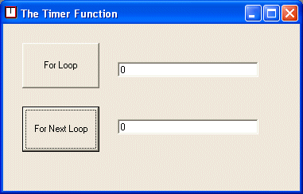
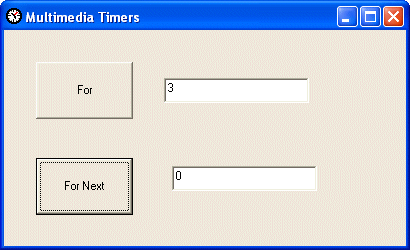

Using Timers to Evaluate Code Performance
by Ron Petrusha03/01/2005
Frequently, in an effort to maximize performance, programmers need to evaluate the execution time of a block of code, and possibly to compare it with other comparable blocks of code. In this article, we'll examine the techniques available in Visual Basic for doing that.
The Timer Function
The most common way to time the execution of a particular block of code is to insert calls to the Visual Basic Timer function at the starting and ending points of the code to be timed. The function returns a Single, representing the approximate number of seconds that have elapsed since midnight. For instance, at 5:30:46 p.m., the Timer function returns a value of 63,046.21.
We can then use code like the following to evaluate code performance;
in this case, to compare the amount of time required to iterate a
string array of 30,001 elements using a For loop and a For Each loop:
Dim strArr(30000) As String
Private Sub cmdFor_Click()
Dim sngStart As Single, sngEnd As Single
Dim ctr As Integer, ctrStart As Integer, ctrEnd As Integer
Dim sValue As String
ctrStart = LBound(x)
ctrEnd = UBound(x)
sngStart = Timer
For ctr = ctrStart To ctrEnd
sValue = x(ctr)
Next
sngEnd = Timer
txtFor.Text = sngEnd - sngStart
End Sub
Private Sub cmdForNext_Click()
Dim sngStart As Single, sngEnd As Single
Dim mem As Variant
Dim sValue As String
sngStart = Timer
For Each mem In x
sValue = mem
Next
sngEnd = Timer
txtForNext.Text = sngEnd - sngStart
End SubThe results, however, may appear as shown in Figure 1. Although our code has attempted to time the execution of two loops that each iterate 1,000 elements of a string array, the text boxes show that no time has elapsed.

Figure 1. The result of using the Timer function
Timer
function, which is based entirely on the system clock. Table 1 shows
the interval between ticks of the system clock in the various versions
of Windows. This means that, on a system running Windows NT 3.5 or
later, an elapsed time of 0ms to 9ms will not be detected, while times
that vary by as much as 9ms can appear to be identical. (On systems
running Windows 95/98/ME, these numbers are even greater.) For purposes
of testing and evaluating code performance, the resolution of the Timer function is simply too imprecise.
| Version | Tick Frequency | Ticks Per Second |
|---|---|---|
| Windows 95/98/ME | 55ms | approx. 18 |
| Windows NT 3.1 | 16ms | 62.5 |
| Windows NT 3.5 and later | 10ms | 100 |
In many cases, this degree of imprecision may be acceptable. When it is not, however, we can use the multimedia timer functions in the Win32 API to precisely measure the execution times of blocks of code.
Multimedia Timer Functions
While the resolution of the system timer used by Windows is
dependent on the operating system, the resolution of the system's
multimedia timers is dependent on installed hardware. You can determine
the capabilities of the system's multimedia timers by calling the timeGetDevCaps function. Its syntax is:
Public Declare Function timeGetDevCaps Lib "winmm.dll" ( _
ByRef lpTimeCaps As TIMECAPS, ' Multimedia timer capabilities
ByVal uSize As Long _ ' Set to Len(TIMECAPS)
) As LongThe TIMECAPS structure passed to the function is defined as follows:
Public Type TIMECAPS
wPeriodMin As Long ' Timer's minimum supported resolution
wPeriodMax As Long ' Timer's maximum supported resolution
End TypeOn return, the members of the TIMECAPS structure are populated with their respective values, and the timeGetDevCaps function should return TIMERR_NOERROR. If the function fails, it returns TIMERR_STRUCT.
The most commonly used multimedia timing function is timeGetTime, which returns a Long containing the number of milliseconds that have elapsed since the system started. Its syntax is:
Public Declare Function timeGetTime Lib "winmm.dll" () As LongBy default, the timer's resolution is approximately 5ms, or about half that of the Visual Basic Timer function. However, this resolution can be overridden for an individual application by calling the timeBeginPeriod function. Its syntax is:
Public Declare Function timeBeginPeriod Lib "winmm.dll"
(ByVal uPeriod As Long) As Long
where uPeriod is the number of milliseconds to which to set the timer resolution. The function returns TIMERR_NOERROR if the function succeeds and TIMERR_NOCANDO if it fails. After you've finished using the timer, you should restore its default resolution by calling the timeEndPeriod function, which has the following syntax:
Public Declare Function timeEndPeriod Lib "winmm.dll"
(ByVal uPeriod As Long) As Long
The uPeriod argument here must match the uPeriod argument supplied in the call to the timeBeginPeriod function. In other words, for each call to timeBeginPeriod, there should be a corresponding call to timeEndPeriod with the same uPeriod argument.
There is one major complication with using timeGetTime.
Because it returns a Long, it can hold values from 0 (presumably
representing a system that has just started) to 232 (which represents a
system that's been running for more than 49 days). In order to be
confident that our timer will work correctly, we have to make an
allowance for the special case in which the start time exceeds the end
time. This can be handled with pseudo-code like the following:
If StartTime > EndTime Then
ElspsedTime = EndTime + (&HFFFF - StartTime)We now can rewrite our earlier code example that compares the execution time of a For and a For Each loop when iterating 30,001 elements of a string array to take advantage of the timeGetTime function instead of Timer. The following code sets the timer resolution to its minimum value (as reported by the TIMECAPS structure's wPeriodMin member), determines the elapsed time by successive calls to timeGetTime, and then calls timeEndPeriod to restore the default timer:
Dim strArr(30000) As String
Dim tc As TIMECAPS
Private Sub cmdFor_Click()
Dim lngStart As Long, lngEnd As Long
Dim ctr As Integer, ctrStart As Integer, ctrEnd As Integer
Dim sValue As String
ctrStart = LBound(strArr)
ctrEnd = UBound(strArr)
lngStart = timeGetTime
For ctr = ctrStart To ctrEnd
sValue = strArr(ctr)
Next
lngEnd = timeGetTime
If lngEnd >= lngStart Then
txtFor.Text = lngEnd - lngStart
Else
txtFor.Text = lngEnd + (&HFFFF - lngStart)
End If
End Sub
Private Sub cmdForNext_Click()
Dim lngStart As Single, lngEnd As Single
Dim mem As Variant
Dim sValue As String
If timeBeginPeriod(tc.wPeriodMin) = TIMERR_NOERROR Then
lngStart = timeGetTime
For Each mem In strArr
sValue = mem
Next
lngEnd = timeGetTime
timeEndPeriod tc.wPeriodMin
If lngEnd >= lngStart Then
txtForNext.Text = lngEnd - lngStart
Else
txtForNext.Text = lngEnd + (&HFFFF - lngStart)
End If
Else
txtForNext.Text = "N/A"
End If
End Sub
Private Sub Form_Load()
Dim ctr As Integer
If timeGetDevCaps(tc, Len(tc)) = TIMERR_NOERROR Then
txtMin.Text = tc.wPeriodMin
txtMax.Text = tc.wPeriodMax
End If
For ctr = LBound(strArr) To UBound(strArr)
strArr(ctr) = "This is a short string."
Next
End SubThis produces a result like the one shown in Figure 2. Note that the execution of the For loop takes 3ms, while the For Each loop shows no elapsed time, evidently because it executes in under 1ms.

Figure 2. The result of the timeGetTime function
Pages: 1, 2 |